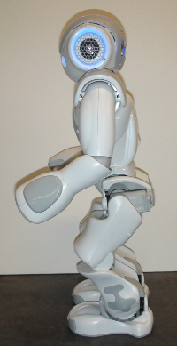
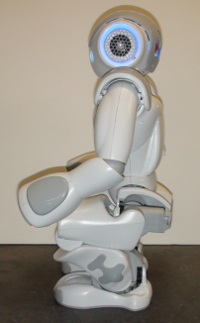
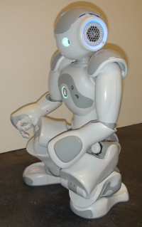
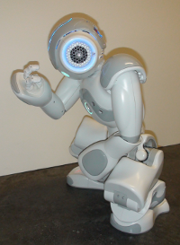
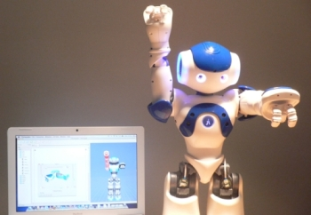
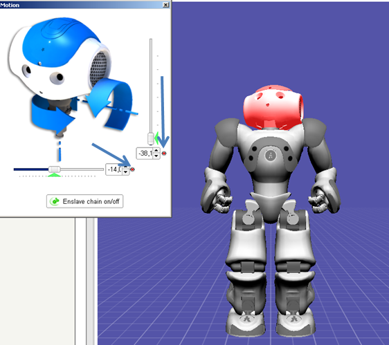
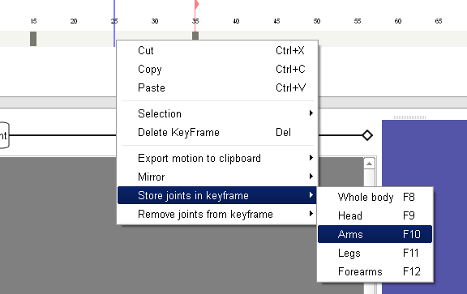

Moving my limbs¶
Creating a movement using Animation mode¶
Cannot be tested on a simulated robot.
This tutorial will show you how to create a movement using the Animation mode.
Create the following behavior: starting from the Init pose of the pose library, animate your robot in order to put it in the position of the famous sculpture called The thinker by Rodin.
Start Animation Mode and store the first position:
| Step | Action |
|---|---|
| Make sure you are connected to a real robot. | |
Awake your robot by clicking the  Wake Up button. If the button is
disabled, it means that your robot is already awake. Wake Up button. If the button is
disabled, it means that your robot is already awake. |
|
Your robot should now be in the StandInit posture. If it isn’t, you can do it by using the Pose library. Your robot in the Init pose should look like that:  |
|
| Create a new Timeline box. | |
| Double click the box in order to display the Timeline. | |
Click the Animation mode button. The button turns red: |
|
Store the first position: Tap the head tactile sensors with your hand. |
 , meaning the Animation Mode is on.
, meaning the Animation Mode is on.{kind=link}
To define the second position, we will decompose the movement:
| Step | Action |
|---|---|
| Hold your robot by the waist/torso to prevent it to fall down. | |
| Push the two foot bumpers to set off the Stiffness of the legs. | |
Lower the torso in order to flex legs, your robot should look like that:  |
|
Move the right foot forward and turn it a little on the right like in the following picture:  |
|
| Push the two foot bumpers in order to set on the Stiffness of the legs. | |
Store the second position: Tap the head tactile sensors with your hand. |
{kind=link}
{kind=link}
The next part of the movement will involve the arms and the head of the robot.
| Step | Action |
|---|---|
| Touch the middle head tactile sensor in order to set off the Stiffness of the head. | |
| Lower the head until it is no longer possible. | |
| Touch the middle head tactile sensor in order to set on the Stiffness of the head. | |
| Tilt the torso forward. | |
| Raise the right hand to the head. | |
| Make sure the position is stable. | |
If it is, store the position. If not, tilt the torso backward until the position remains stable and store the position. Your robot should look like that:  |
|
Click the The button turns green: . |
{kind=link}
Test your behavior:
| Step | Action |
|---|---|
| In the Timeline panel, click the Play motion button. |
Creating a movement from scratch¶
In Choregraphe, it is very easy to create simple movements in no time.
| Step | Action | Further help |
|---|---|---|
| Drag and drop the Template > Animation box onto the Flow diagram panel. | ||
Double-click the box to enter it. An empty Timeline is displayed. |
||
| Set the robot in a starting position. | To quickly set the robot in a position, you can click on a predefined position in Pose library panel. | |
| Right-click on the Frame 5 of the the Motion layer. | Having a keyframe at index 1 is not advised: it would mean that the robot, from an unknown position when entering the box, should go to this position in no time and the keyframe would probably be ignored. | |
Click on one of the robot limbs to display the Limb properties. Note Whenever there is a current frame cursor (the blue line) on the Timeline, the motion editing is on. |
||
| In the Limb properties, you can add some joint values of the selected limb in the current keyframe, moving a limb will automatically add the joint value to the selected keyframe. |
Creating a movement with a real NAO robot to define the joints values¶
Cannot be tested on a simulated robot.
Warning
The Stiffness of Head motors have to be set off.
This tutorial explains how to use a real robot to create a movement.
We will see how to define joints values by moving the real robot.
Saving the head joints values using the Robot view¶
When you change the real NAO position, you can see that the virtual 3D NAO changes position too. Try to raise NAO’s arm for example.
Wouldn’t it be nice to use this feature to create position keyframes on a motion Timeline?
Now, let’s say we want NAO to move its head up in the first keyframe and to keep its arms down:
Click on the first keyframe
Click on the head of the virtual 3D NAO to open the Limb properties.
Move the real NAO robot head to the position you want.
Click on the two record buttons of the Limb properties as in the following picture:
The head joints values have been saved in the first keyframe.
Saving the arm joints values using the “Store joints in keyframe” options¶
Move the real NAO robot arms to put them down.
Click on Stiffen chain on/off in the Limb properties.
The robot doesn’t move.
Right-click on the first keyframe and select the Store joints in keyframe option.
Note
This feature allows you to save the joints values of NAO: the joints of the whole body, the head, the arms or the legs.
As we want to save the joints values of the arms, click on Arms.
The joints values of the arms have been saved in the first keyframe.
Raising the arms in a second keyframe¶
Left click the motion Timeline to change the current edition frame (the blue line).
A second keyframe is displayed on the motion Timeline.
Move the real NAO robot arms to the position you want.
Click on Stiffen chain on/off in the Limb properties.
The robot doesn’t move.
Right click on the second keyframe and select Store joints in keyframe > Arms.
The joints values of the arms have been saved in the second keyframe.
Thanks to the Store joints in keyframe option, we were able to save the values of 8 joints (4 joints per arm) in a keyframe in only a single click.
Note
When you right-click on a keyframe, the Remove joints from keyframe option allows you to easily remove the joints values that have been saved in a keyframe. You can choose to remove the joints values of the whole body, or only the values of the head, arms, legs or forearms.